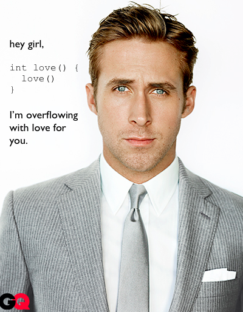

Your browser doesn't support the features required by impress.js, so you are presented with a simplified version of this presentation.
For the best experience please use the latest Chrome, Safari or Firefox browser.
With multiple bits of information

This could be some code
Or anything else you want monospaced
types.jsonstyles.csstemplate.htmlslides.md=== {"styles": ["notslide", "just_title"]}
# A simple slide show
=== {"styles": ["just_title"]}
# A single slide
=== {"type":"under"}
some interesting content
Use a spacebar or arrow keys to navigate